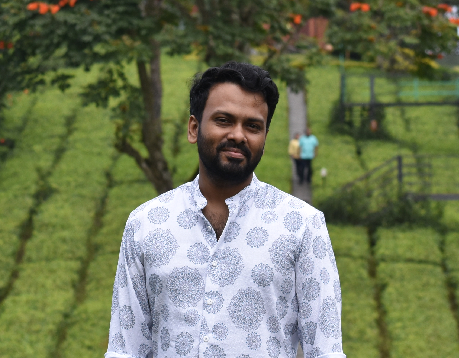

Arjun CB
Software Engineer
About Me
A seasoned professional passionate about harnessing cutting-edge technologies to create innovative solutions with high social impact.
I'm a passionate software developer with a strong background in areas like ERP (Enterprise Resource Planning), surveillance using computer
vision, and VR (Virtual Reality) simulations. I am particularly keen on pursuing research in areas of AI like autonomous robotics, bio-mechanics,
rehabilitation technologies, transformational games, multi-agent control, and perception to create a more sustainable, inclusive, and efficient world.
Skills
- Programming Languages: C++, C#, Python
- Databases: MySQL, PostgreSQL
- Tools: Git, Docker, Elasticsearch
- Other: Unity, Unreal
Projects
- MEDSIM Medical VR Simulations and OLABS Educational VR and WEBGL Simulations - Medical VR simulations in COVID-related scenarios, useful for process training and compliance of medical personnel.
- MEDSIM Medical VR Simulations and OLABS Educational VR and WEBGL Simulations - Educational simulations (VR and web-based) of school-level NCERT science experiements from classes 5 to 10.
- Tripti - A JIT (Just-In-Time) approach for resources NGOs and relief camps require. Envisioned during the Kerala-Karnataka floods.
- Vehicle Identification - with YOLOv5 Object Detection, KNN-Color Histogram, Elasticsearch, Django and Python.
The project aims to identify vehicles like cars, trucks, bikes, buses, etc., based on their type, color, and make.
Contact